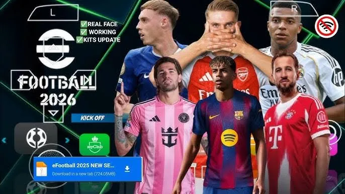
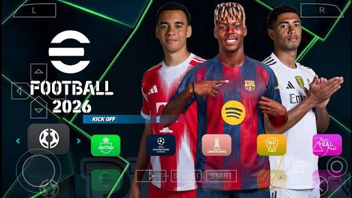
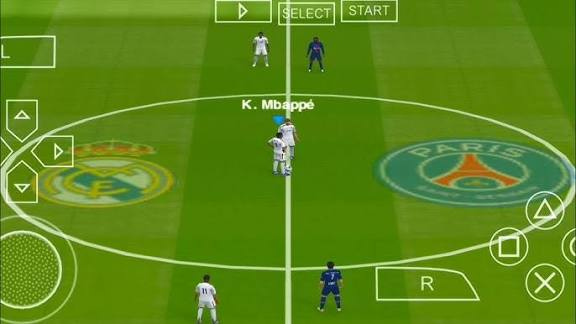

Best PSP Games for PPSSPP Emulator
Best PSP Games for PPSSPP Emulator

PES 2025 PPSSPP – PSP ISO is a modified and updated version of the classic Pro Evolution Soccer, based on stable editions like PES 2019 / PES 2020, but fully revamped for the 2024/2025 season. The game runs smoothly on the PPSSPP emulator for Android, offering a modern football experience in a lightweight and optimized format.
This version features updated squads, recent transfers, new 2024/2025 kits, realistic lineups, and players updated according to the current season. Both clubs and national teams showcase higher visual fidelity, making every match more immersive.

The game offers several classic modes, including Exhibition, Master League, Champions League, as well as national and international leagues. It also supports Ad-Hoc mode, allowing you to challenge your friends. The gameplay remains balanced and responsive, ideal for both casual players and veteran fans of the PES franchise.

Stadiums have received graphical enhancements, including more realistic turf, improved lighting, and updated venues, providing visually stunning matches for PSP standards. Performance is stable on PPSSPP, even on mid-range Android devices.
Check out the best ppsspp cheats codes
PES 2025 PPSSPP is the ideal choice for those seeking an updated, fun, and compatible football game for Android, maintaining the classic PES essence with a modern look and rosters.